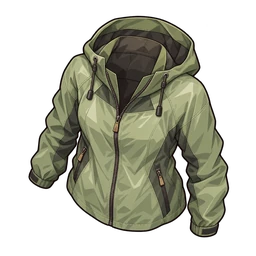

防風外套
R 身體
登山用的薄外套。擋住地下的冷風。
概要
| 部位 | 身體 |
|---|---|
| 稀有度 | R |
| Lv1 的 HP | 22 |
| 每級固定 HP | 1 |
| HP 成長率 | x1.04 |
| Gacha | 普通 Gacha: 第11關起 (第2彈, 第3彈, 第4彈, 第5彈, 第6彈, 第7彈, 第8彈, 第9彈, 第10彈) 付費 Gacha: 第11關起 (第2彈, 第3彈, 第4彈, 第5彈, 第6彈, 第7彈, 第8彈, 第9彈, 第10彈) |
技能
無技能
各等級 HP
Lv L 的 HP = round(基礎 HP × 成長率^(L-1)) + floor(固定 HP × (L-1))
| Lv | HP |
|---|---|
| Lv1 | 22 |
| Lv10 | 40 |
| Lv20 | 65 |
| Lv30 | 98 |
| Lv50 | 199 |
| Lv99 | 1125 |
等級上限起初為 20。每重複獲得同一件護具，上限提高 10，最高 99。